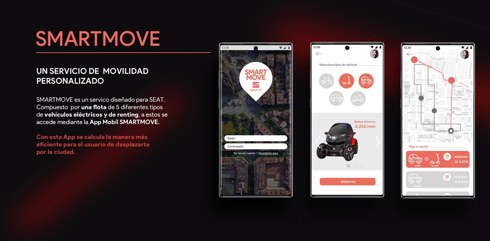
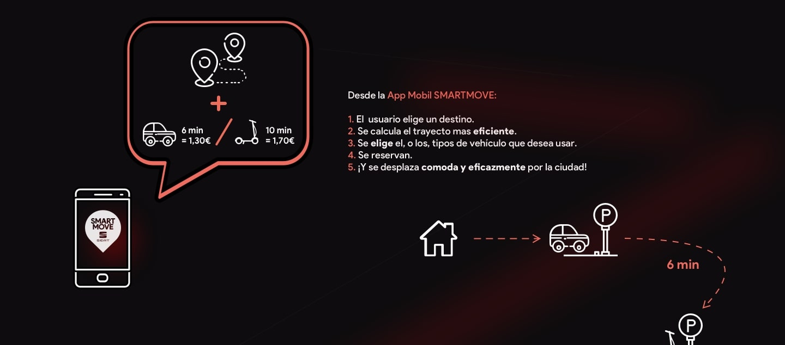
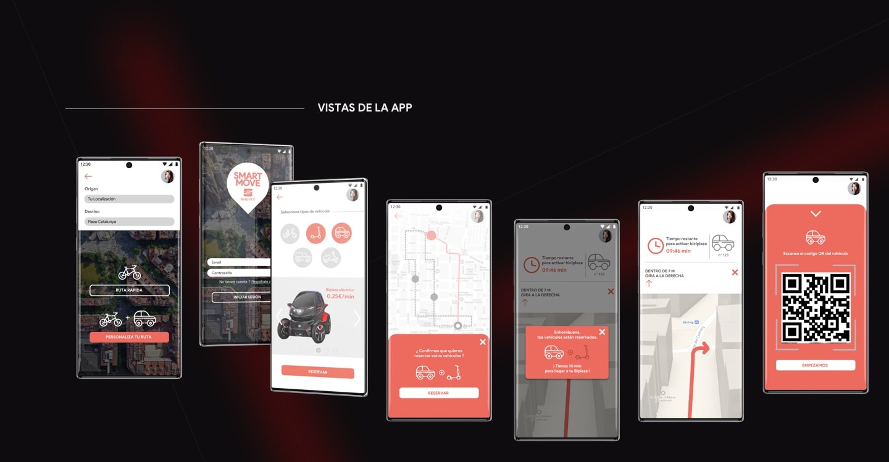

Diseño de Hero Header para el Servicio SMARTMOVE
  SMARTMOVE permite eligir un destino, calcular el tiempo de trayecto (como con Google Maps), ademas de eligir y reservar (como con Yego, Scoot, Ubeqoo, Reby...) el o los tipos de vehículos que el usuario prefiere, o decide, usar para ese trayecto. La movilidad de la ciudad se esta actualizando, y con ella, los ciudadanos buscan realizar desplazamientos más libremente.
El hecho de juntar estos dos servicios agilizaría considerablemente los desplazamientos en la ciudad. Ademas, podríamos restar estrés y preocupación a los usuarios, que con estos servicios actualmente separados, tienen que estar comparando y calculando trayectos, saltando de una aplicación a otra.